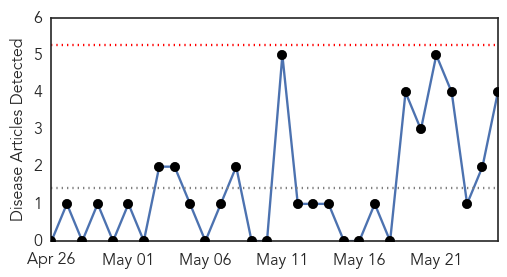
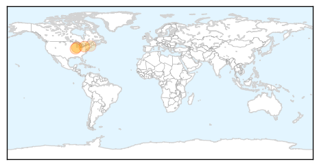
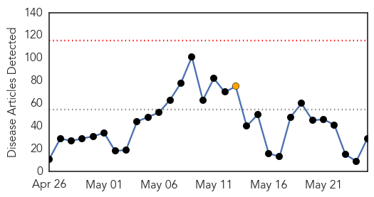
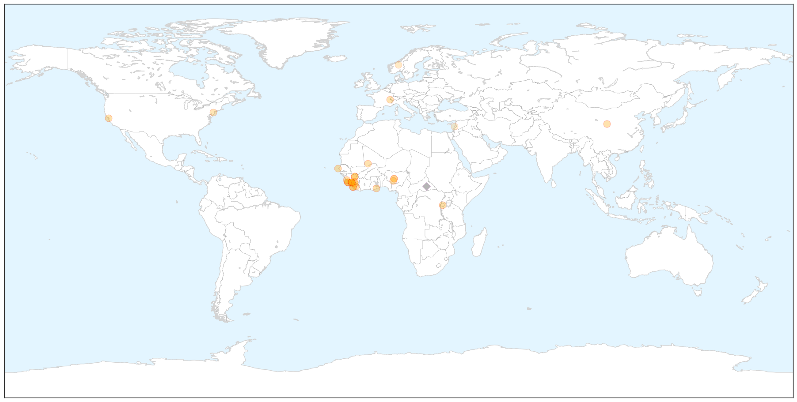

West Nile Virus
30-Day Web Trend
0 alerts, 0 warnings

30-Day Twitter Trend
0 alerts, 0 warnings

Article Locations

Article Confidences

Top Articles:
Top Tweets:
-
No tweets found for May 25, 2015
Ebola
30-Day Web Trend
0 alerts, 1 warnings

30-Day Twitter Trend
0 alerts, 0 warnings

Article Locations

X

Article Confidences

Top Articles:
- 1.000
- The Ebola outbreak highlights shortcomings in disease surveillance and response – and where we can do better
- 1.000
- Ebola outbreak reaches Senegal, riots break out in Guinea
- 0.998
- How Ebola Affects Free Healthcare
- 0.996
- WESLEY PRUDEN: A little good news about Ebola
- 0.993
- Ebola: WHO urges communities to ″remain vigilant″
- 0.992
- Global health: After Ebola, attacking other killers
- 0.990
- Are We Ready for the Next Epidemic? Fixing Africa’s Primary Healthcare
- 0.990
- Sierra Leone marks grim Ebola anniversary
- 0.986
- Decisive Action Needed to Confront the Virus in Guinea, Sierra Leone
- 0.984
- Pres. Sirleaf to AU-ASEOWA: "We We Owe You a Debt of Gratitude
- 0.975
- Justine Greening: One year on from Ebola reaching Sierra Leone
- 0.967
- Roundup: China's positive role in Ebola crisis applauded
- 0.964
- 250 Ebola volunteers return amidst jubilation
- 0.956
- Red Cross helps strengthen Sierra Leone's broken healthcare system
- 0.947
- Vaccine Development In Africa
- 0.946
- Praise for faith leaders one year on from Ebola
- 0.943
- As Ebola Clocks 1 Year…President Pledges To Support Survivors
- 0.943
- Ebola Crisis in West Africa - Sierra Leone
- 0.939
- Japan and South Africa Lift Travel Bans on Liberia
- 0.929
- Liberia's Ebola orphans torn between govt, orphanages
- 0.918
- World Health Assembly gives WHO green light to reform emergency and response progamme
- 0.910
- Sierra Leone's prisons: tough, but Ebola-free
- 0.860
- Sierra Leoneans must give Dr. Phil Kramer a big hand in Tuesday’s Mayoral elections in Franklin , Somerset, NJ : Councilman was helpful in mobilizing support for Sierra Leone’s Ebola fight
- 0.831
- Active Tracing and Monitoring of Contacts Associated With the First Cluster of Ebola in the United StatesEbola Contact Monitoring in the United States
- 0.778
- Sierra Leone News : VP Foh wants Sustained Support to prevent HIV
- 0.725
- AU Takes Rebuilding Approach in Liberia’s Post-Ebola Period
- 0.705
- Sierra Leone News: Health Network promotes school-based hygiene « Awoko Newspaper
- 0.666
- Peabody Energy : Coal giant exploited Ebola crisis for corporate gain, say health experts
- 0.594
- Departamento de Justicia revisará asesinato de pareja en Cleveland a manos de la policía
Top Tweets:
- 0.958
- The Ebola outbreak highlights shortcomings in disease surveillance and ... - Medical Xpress http://t.co/sN8ul03SGs ebola EVD
- 0.876
- Ebola : en Guinée et en Sierra Leone le virus n'a pas dit son dernier mot http://t.co/IqkDXLshkY
- 0.793
- Sierra Leone marks grim Ebola anniversary - Yahoo News http://t.co/MySqbrk0nB ebola EVD
- 0.759
- Aberdeen Proving Ground research to help end Ebola virus - Baltimore Sun http://t.co/vcI1P4IscZ ebola EVD
- 0.754
- The Ebola outbreak highlights shortcomings in disease surveillance and ... - Medical Xpress http://t.co/vr4LVlqWTX
- 0.728
- Ebola-Free Liberia Gets Greenlight to Host Internationals - Front Page Africa http://t.co/iWU3aGuTiL ebola EVD
- 0.720
- Sierra Leone marks grim Ebola anniversary - Times of India http://t.co/BywHbHuF5J ebola EVD
- 0.600
- Global health: After Ebola attacking other killers - Minneapolis Star Tribune http://t.co/t4uuwmRI5b ebola EVD
- 0.578
- 250 Ebola volunteers return amidst jubilation - The Nation Newspaper http://t.co/PtoTjJtUjc ebola EVD
- 0.555
- A little good news about Ebola - Washington Times http://t.co/8lQw58o6Cj ebola EVD
- 0.512
- Chinese president congratulates Liberia on its Ebola-free victory - Xinhua http://t.co/cJLPws5NI2 ebola EVD